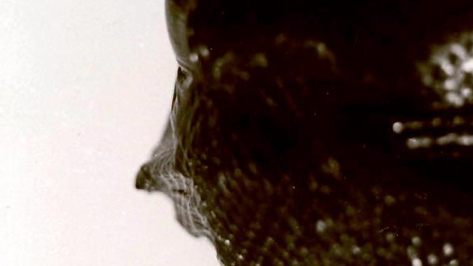
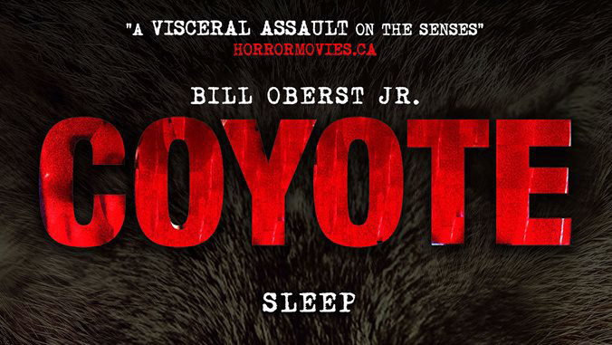

Selected work

The Man in Room Six
Feature film · writer / director / editor · 2022. Available digitally on Amazon Prime Video, Tubi, and additional platforms.
View film notes · IMDb · Vimeo
Other films
- Relentless — feature in post-production, anticipated 2027.
- The Haunted Belldown School — short film, 2025 St. Louis Filmmakers Showcase.
- Coyote — feature, writer / director; more than 30 festival selections.
- DOPE — series pilot, writer / director.
About

Trevor Juenger is an independent filmmaker and educator from rural Illinois. His work moves between horror, surrealism, fractured narrative, photography, and video installation.
He champions ultra-low-budget filmmaking for the creative freedom it gives artists working outside traditional financing. His features and shorts have screened internationally, received regional arts support, and earned festival recognition.
Get in touch or read the CV.
Teaching

Trevor teaches film production at Southwestern Illinois College and Webster University, where he works across cinematography, editing, color, motion graphics, visual effects, film history, and emerging production technologies.
He is also SWIC Film’s equipment manager, overseeing more than 200 production assets and the program’s camera, lighting, software, and maintenance purchasing.
View curriculum vitae
Photography & exhibitions

Photographic and moving-image work has appeared in exhibitions including Prints of Darkness, Tales by Light, Memento Mori, and Webster University faculty exhibitions at Kooyumjian Gallery.
Recent recognition includes an Award of Excellence for Memento Mori and a 2023 juried appearance at the St. Louis Artists’ Guild.
Contact
For screenings, teaching, collaborations, or production work:
trevorjuenger@gmail.com
618-954-0628